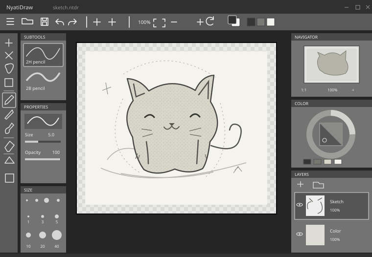

연필에서 시작하기
2H 샤프펜슬과 2B 연필, 펜, 소프트 브러시, 지우개. 크기와 농도 필압을 따로 조절하고 최근 크기로 돌아갑니다.
그리는 사람을 위한 작업 도구 · 개발 중
아이디어를 잡는 러프부터 게임에 넣을 PNG까지.
연필과 레이어로
시작하는 드로잉 도구, NyatiDraw.
웹은 WebGPU 지원 최신 브라우저가 필요합니다.
Windows x64 · 최신 버전과 변경 내역은 Releases에서 확인하세요.

WINDOWS APP
러프, 선화, 밑색, 명암.
하나의 그림을 끝내는 흐름을 다듬고
있습니다.
2H 샤프펜슬과 2B 연필, 펜, 소프트 브러시, 지우개. 크기와 농도 필압을 따로 조절하고 최근 크기로 돌아갑니다.
레이어와 그룹, 사각형·올가미 선택, 직접 조작하는 자유 변형. 참조 채우기, 투명도 잠금, 클리핑으로 색과 명암을 나눕니다.
출력 영역 밖에도 그림을 이어 그립니다. 바깥 그림은 프로젝트에 남고, PNG에는 캔버스 안쪽만 담깁니다.
GET STARTED
브라우저에서 가볍게 시작하거나,
Windows에서 작업 폴더와 이어
쓰세요.
설치 없이 브라우저에서 여는 편집기입니다. Windows 앱과는 지원 기능이 다릅니다.
레이어를 보관하려면 ‘작업 저장’으로 웹 작업 파일을, 다른 앱에서 쓰려면 PNG를 내려받으세요. 브라우저 복구 데이터만 백업으로 삼지 마세요.
실험적 웹 편집기 열기게임에 쓰는 PNG와 편집용 NTDR를 같은 폴더에 두고, 열고 그려서 다시 저장합니다.
WORK IN PROGRESS
완성된 제품이 아닌 개발 중인 알파입니다.
중요한 작품은 별도
사본을 보관해주세요.
Windows는 128단계 히스토리, 연필·브러시, 레이어, 선택·자유 변형, 채우기, 프로젝트 저장과 PNG 출력을 지원합니다. 최신 변경은 릴리스 노트에서 확인할 수 있습니다.
X/Y 반복, 비파괴 레이어 색상화, 메시 변형, 습식 브러시·뭉개기, 벡터와 애니메이션은 아직 지원하지 않습니다. 웹은 별도의 실험적 구현이며 이 Windows 기능 목록과 같지 않습니다.
Windows 설치판은 아직 게시자 코드 서명이 없습니다. 출처와 릴리스 노트를 확인한 뒤 설치해주세요. macOS·Linux용 설치판은 제공하지 않습니다.
필압과 펜 버튼은 Windows 및 펜 드라이버의 입력에 영향을 받습니다. 모든 기기에서 검증된 것은 아니며, 두 버튼은 드라이버 설정이 필요할 수 있습니다.
NTDR에는 레이어와 편집 기록이, PNG에는 출력 영역의 합성 그림이 들어갑니다. 저장 형식은 알파 개발 중 바뀔 수 있어 새 버전에서 저장한 파일이 구버전에서 열리지 않을 수 있습니다.
Windows의 PNG·NTDR 자동 연결은 웹에 적용되지 않습니다. 웹 전용 .nyatidraw-web 파일은 레이어와 도구 설정을 보관하지만 편집 기록은 포함하지 않습니다. 앱 간 그림 교환에는 PNG를 사용하세요.